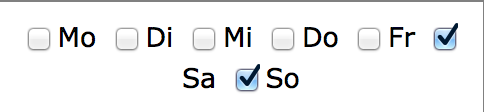

Programmierung
- Mail an Team verschicken
- Files ...Saver.php zu einem File zusammenfassen?
- Bemerkungen bei Eingabe der Daten - Möglichkeit für Assistenten noch mehr Informationen zu liefern
- User-Login
- User-Login: Administrator-Account für Patrick
- User-Login: Developer Account für mich
- User-Login: Login mit AJAX
- User-Login: Team-Mitglied hinzufügen - "verbotene" Login-Namen wie developer oder $Settings->adminName
- User-Login: Passwort zurücksetzen für Admin
- User-Login: HTTPS
- htmlspecialchars konsequent verwenden
- alle input-Elemente auf '&' prüfen
- Stundenkontigent nur Zahleneingaben erlauben
- Bedingte Formattierung bei Stundenübersicht
- functions.php in Klassen unterbringen?
- Überstundenstatistik aus Vormonaten berücksichtigen
- manuelle Vorgaben berücksichtigen -> Algorithmus macht Vorschlag, Patrick macht Eingaben - Algorithmus läuft
nochmal
- develop-Account -> erweiterte Ausgaben sichtbar
- Settings - z. B. Standardpasswort bei Account-Erstellung
- Personenbezogene Dinge nicht mehr auf Vorname sondern auf Login-Name beziehen -> Roster etc.
Ausarbeitung
- Struktur überlegen + Inhaltsverzeichnis definieren
- Erste Seiten wie Norm
- Kapitel: Anforderungsermittlung schreiben
Recherche
- Genetische Algorithmen
- Modellgetriebene Software-Entwicklung
- PHP in Zusammenarbeit mit MySQL
- Buch: Technisches Schreiben lesen
- Buch: UML Glasklar lesen
- PHP Storm Debug-Session mit xdebug
Organisatorisches
- Topcased testen
- UML-Programm suchen
Server
- Datenbank zum Laufen bekommen
- Datenbank mit PHP ansprechen
- Ftp + PHPloy
- Cron-Job erzeugen
- eMail Benachrichtigung bei fehlendem Input
- eMail Benachrichtigung bei erstelltem Dienstplan
Unschönheiten

Ideen
- Dienstbeginn und -ende schöner machen - mit Slider? mit jKit?
- Dienstplan: Excel Export
- Feiertage importieren für Monatsplan
- ICS-Export
- The PHP-Login Project
- Private Notizen analysieren nach Stichwörtern z. B. FCB, Julia -> diese Stichwörter können in Team-Tabelle
angegeben werden und gehen in das Scoring des Dienstplan-Algorithmus ein